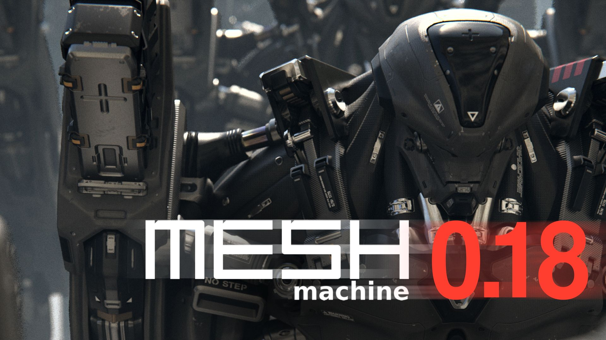
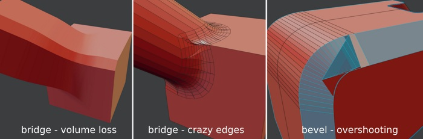
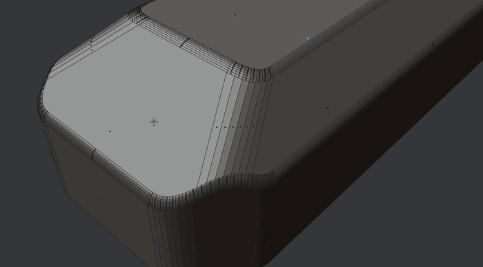
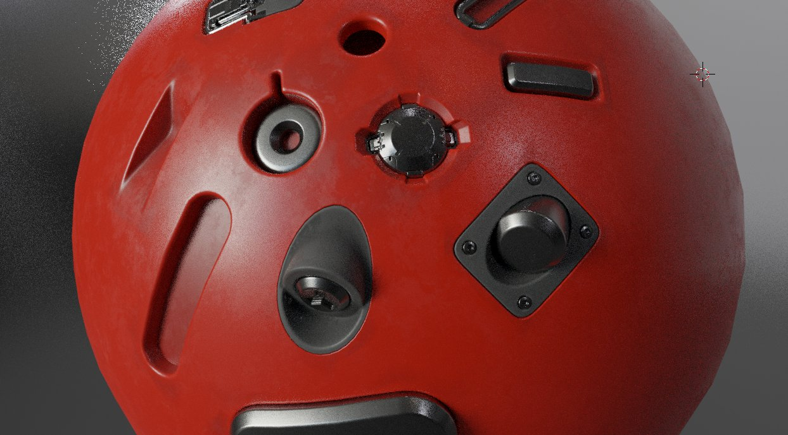

Introduction
Gumroad | Superhiveformerly Blender Market - Blender Artists - Youtube - Bluesky | X - Patreon - eMail
How do I get product support?
See FAQ for details. Please watch the GetSupport video, then reach out via email.
 cover image based on Humanoid Mecha concept by Bruno Gauthier Leblanc
MESHmachine is a Blender mesh modeling addon with a focus on hard surface work without subdivision surfaces.
MESHmachine's chamfer and fillet toolset allows for more flexibility, when dealing with fillet-like surfaces, traditionally created with the Bevel and Bridge tools.
MESHmachine's approach to fillets is the Fuse tool, which builds transitional surfaces from chamfers, fusing the surfaces on both sides.
Doing this, you get the benefits of both - chamfers and fillets - while avoiding their disadvantages.
Read on below for an overview of MESHmachine's tools and ideas.
Features
- turn chamfers into fillets/bevels and back
- change the width of a chamfer or bevel
- create variable fillets and washouts
- unchamfer and unbevel to go back to a hard edge
- practically edit existing existing bevels
- resolve tricky geometry overlaps in cases where two bevels meet
- flatten multiple polygons based on another polygon or flatten a single polygon based on 3 vertices
- flatten along a normal or flatten along edges
- redirect chamfer flow by turning the corners
- convert triangular bevel corners into quad corners
- plug details into your mesh
- build your own plugs and create/buy/sell plug libraries
- stash objects or face selections, creating backups, that can be brought back or referenced by other tools, without cluttering the scene
- conveniently add boolean modifiers (incl. split booleans), create automatic stashes when applying the mods, and easily duplicate or instance objects using booleans
- cleanup applied booleans and create clean perimeter loops around their intersections
- create flattened, straightend, and transferred custom normals
- symmetrize meshes including their custom normals
- turn mirror modifiers into real objects
- loop select, sharp select and vertex group select, all using a single keymap
- easily add wedges
- best documentation in the business
Overview
Chamfers
Chamfers (flat bevels) are easy to create, easy to manipulate and are easy to (loop) select.
They are very useful to quickly block out more complex forms and already contain all the important information in regards to the flow of surfaces and edges as well as the chamfer width.
Chamfers are also a dead end, if you want to further refine them later on, unless you get down to the edge or vertex level, which is time consuming.
Traditionally, they can't be easily turned into fillets(rounded bevels) and removing the chamfer polygons to bridge the open edge loops, bedides being tedious, often produces results without good surface continuity or with unnessesary edges.
 The overshooting is relatively easy to fix, IF you actually want to create a chamfer, but gets harder (support edges), if you want a rounded bevel. So, what if you could turn a chamfer into a bevel?
Fillets
Fillets (round bevels) are also easy to create, using Blender's Bevel tool. But once created, they are hard or downright impossible to manipulate. Depending on the density, they are also significantly harder to select.
Fillets are excellent for refined, finished forms however, but due to how hard they are to manipulate, using them early on usually means you are locking the design down. Changing it later becomes so hard, you're likely to deny yourself that option completely.
As a result your design may suffer.
Fuse
Using MESHmachine's Fuse and Unfuse tools, you can move between chamfers and fillets back and forth effortlessly - you can turn a chamfer into a fillet and a fillet back into a chamfer.
This allows for significant gains in flexibility, because - remember - a chamfer is trivial to manipulate and once you've done so, you can turn it into a Fillet again.
Moreover, the width of a chamfer will directly determine the width of a fillet(the radius if you want, but it's not precisly circular and depends on the tension setting).
This in turn allows for the creation of variable fillets and even washouts, which are impossible to do with the bevel tool and modifier.
 tasks like these are usually pretty tedious, but are rather trivial with MESHmachine
Plugs

Plugs are mesh inserts, that in combination with normal transfers, can produce flawless detailing, even on curved surfaces and even on medium or low density models. MESHmachine provides tools to manage plug libraries and tools to create your own plugs well.
Stashes
MESHmachine introduced the concept of Stashes, which are basically object backups, that can also be referenced by other tools, like Conform.
What's special about them, is the out-of-your-way approach, which means they won't clutter the scene and instead are accessed, edited, swapped or retrieved using a modal stash viewer or the panel in the sidebar.
Booleans
MESHmachine provides tools to conveniently set up boolean operations in object mode using Blender's boolean modifier. It adds a 4th boolean split mode and allows for easy duplication or instancing of objects carrying boolean modifiers including their cutter objects.
In addition it facilitates applying these modifiers and creates stashes from the boolean operants automatically.
Beyond that, MESHmachine supplies a few tools, that are helpful after boolean operations.
Boolean Cleanup merges vertices on the transitional edge between two boolean operators.
The Chamfer and Offset tools help to create clean boundary topology, which in turn is beneficial for tools like Bevel, Change Width and Fuse/Refuse.
Normal Tools
In addition to modeling tools, MESHmachine has so far added 4 tools to manipulate vertex normals.
Traditionally used in game art, if at all, this makes custom normals accessible in medium and high resolution mesh modeling as well and further loosens topology constraints in non-subd modeling.
The Normal Transfer tool in combination with stashes, mirrors behavior of parametric solids and nurbs applicatinos and can produce the similar quality in terms of shading.
Mirroring
Utilizing custom normals, requires additional tooling on the mirroring front, as Blender's symmetrize tool does not support custom normals.
MESHmachine's Symmetrize adds those missing normal mirror capabilities, and allows for efficient single-keymap "flick symmetrizing" all all 6 object space directions.
As for the mirror modifier, MESHmachine's Real Mirror tool can create real geometry with properly mirrored object origins and custom normals from objects carrying mirror mods. This then enables correct object-space texturing for mirrored geometry.
Selection
Loop selecting in context of non-subd or ngon modelling can be a challenge, because Blender's native loop select tool is aimed at quad topology.
That's why MESHmachine introduces an angle-based loop select tool called LSelect, that is free of quad topology constraints.
In addition, SSelect allows for easy selections of connected sharp edges.
VSelect provides a quick, visual way to select geometry stored in vertex groups. This is especially useful in combination with Plugs and Normal Transfers, but can also be handy for rigging/skinning.
Tying these three as well as Blender's native loop select tool together, is the Select tool, which is a wrapper around all 4, thereby enabling conditional use of each one via a single keymap.
Looptools
Looptools is a favourite addon of many blender users and ships with blender's default set of addons.
MESHmachine provides modal wrappers, so Looptools' Circle and Relax can be used in the same fashion as MESHmachine's tools.
Resources
For installation help, see the Installation page.
For questions you have or problems you may run into, see the FAQ.
To discuss using MESHmachine, please use the blender artists and polycount threads.
For plug creation, jump to Plug Creation.
To learn about all of MESHmachine's features and tools, you can either check out this playlist on youtube, or better - access those same videos, but in context and with additional information through the sidebar to the left.